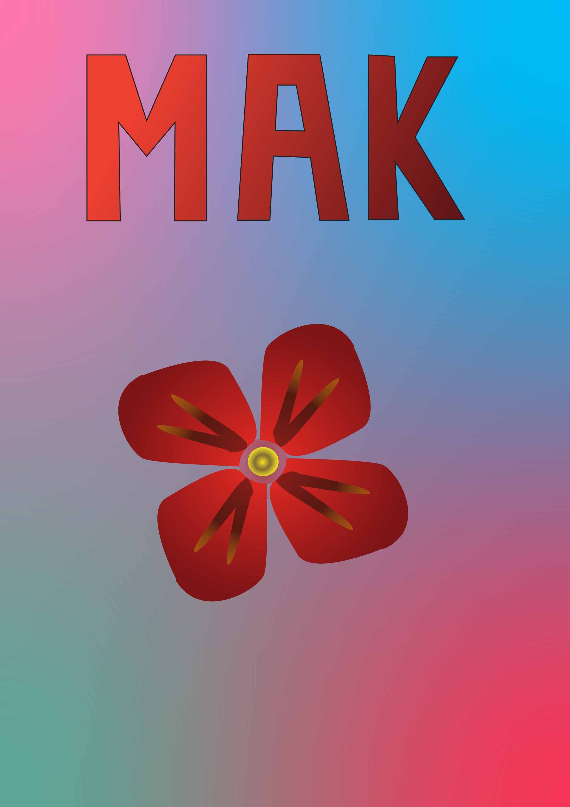

Ovdje možete dobiti uvid u vježbe koje sam odradila na kolegiju Digitalni multimedij 1. Vježbe su raznovrsne, u programima vektorske i pikselske grafike dobivali smo zadatke odraditi svakojake vježbe kako bi se što bolje upoznali s ovim programima.
VEKTORSKA GRAFIKA
Za vježbe vezane uz vektorsku grafiku koristili smo programe: Adobe Illustrator i Fontforge
1. VJEŽBA
Za prvu vježbu dizajnirali smo svoj font za početna slova imena i prezimena, te hrvatske slovne znakove koristeći Fontforge.
Font
2. VJEŽBA
Za drugu vježbu trebali smo kreirati proizvoljan broj krivulja čije su točke poravnate prema mreži koordinatnog sustava. Također, trebali smo koristiti
interpolaciju te ispisati tekst preko krivulja koristeći vlastiti font i napraviti masku. Zadatak smo mogli raditi koristeći Adobe Illustrator.
Slova
3. VJEŽBA
Za treću vježbu trebali smo nacrtati vlastiti objekt. Tehnikama kopiranja, rotacija, scalea, kreiranjem swatcheva
te koristeći transpiraciju, napravila sam cvijet.
Cvijet
4. VJEŽBA
Za četvrtu vježbu morali smo kreirati složeni objekt u Illustratoru. Ja sam motiv napravila cvijet maka. Odabrala sam mak zbog toga što mi je nedavno rođen drugi nećak, Mak.
 Mak
PRVI PROJEKTNI ZADATAK
Za prvi projektni zadatak smo kreirali crtež kopirajući ga sa zadanog predloška. Ja sam dobila fotografiju koja prikazuje košaru s voćem. Uz to morali
smo kreirati vlastiti font kojim će pisati riječ Voće.
Voće
PIKSEL GRAFIKA
Za vježbe iz piksel grafike koristili smo programe Adobe Photoshop ili Gimp.
5. VJEŽBA
Za petu vježbu trebali smo odabrati jednu fotografiju te na njoj primjeniti retuširanje.
6. VJEŽBA
Za šestu vježbu trebali smo kolorirati svoju crno-bijelu fotografiju te smo trebali napraviti minimalno pet primjera iste slike sa različitim postavkama
kolorizacije.
7. VJEŽBA
U sedmoj vježbi morali smo napraviti fotomontažu. Pritom, koristila sam veći broj fotografija iz kojih sam selektirala dijelove koje sam željela izrezati
kako bi se što bolje uklopili u finalnu sliku.
DRUGI PROJEKTNI ZADATAK
Za drugi projektni zadatak trebali smo retuširati i kolorirati fotografije te napraviti fotomontažu.
VIDEO I WEB
Za ove vježbe mogli smo koristiti programe Adobe Premiere, Shotcut ili Davinci Resolve za editiranje videa, te Notepad++, Adobe Dreamweaver, Atom ili
Sublime Text za izradu web dokumenta. U ovim vježbama ja sam koristila Adobe Premiere i Notepad++.
8. VJEŽBA
Za osmu vježbu trebali smo snimiti vlastiti kratki video ili koristiti besplatan video isječak te ga obraditi kao kinematograf koristeći programe za editiranje
videa. Koristeći Premiere i besplatni video, napravila sam kinematograf ptice koja promatra more.
9. VJEŽBA
Za devetu vježbu trebali smo minimalno izrezati dva videoisječka, koristiti efekte, te dodati novi zvuk.
10. I 11. VJEŽBA
Za desetu vježbu trebali smo napraviti svoju vlastitu WEB stranicu koristeći HTML i CSS. Također, tu stranicu trebali smo uploadati na Github račun. Stranicu
sam napravila koristeći Notepad++.
.jpg)
.jpg)
.jpg)